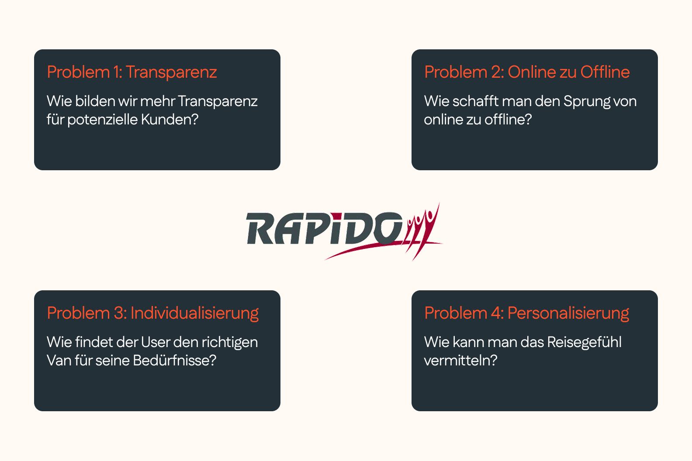
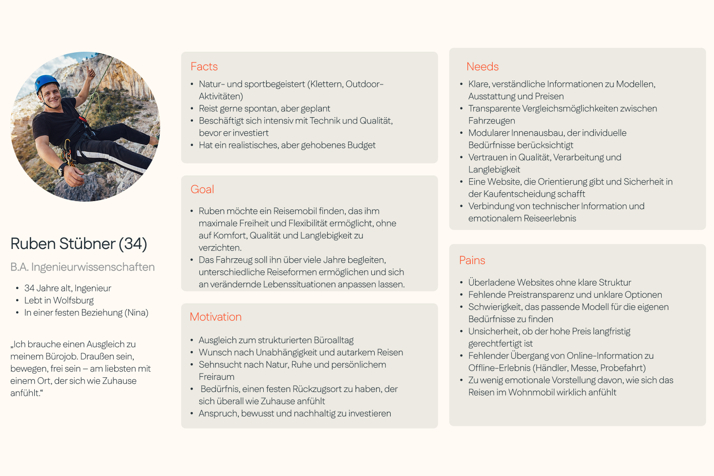

Rapido Reisemobile: Redesign
Rapido Reisemobile ist ein französisches Unternehmen für Wohnmobile und Reisemobile. Im Rahmen dieses Projekts wurde die bestehende App einem vollständigen UX/UI-Redesign unterzogen – von der Nutzerrecherche über Prototyping bis hin zu A/B-Testing. Ziel war es, eine intuitivere Navigation, ein modernes Designsystem und bessere Personalisierungsmöglichkeiten zu schaffen.

Discover – Nutzerrecherche
In der ersten Phase des Double-Diamond-Prozesses wurden Nutzerinterviews mit Wohnmobil-Reisenden durchgeführt. Dabei wurden zentrale Pain Points in der bestehenden App identifiziert: unübersichtliche Navigation, veraltetes Designsystem und fehlende Personalisierungsmöglichkeiten.
Heatmaps und Clickpfad-Analysen ergänzten die qualitativen Erkenntnisse und lieferten ein klares Bild der meistgenutzten und am häufigsten abgebrochenen User Flows.

Define – Problemdefinition
Auf Basis der Forschung wurden drei Primär-Personas entwickelt, die unterschiedliche Nutzungsszenarien repräsentieren. User Journey Maps visualisierten emotionale Hochs und Tiefs entlang der Customer Journey.
Als Kernproblem wurde formuliert: Reisende benötigen eine App, die ihnen im Urlaub schnellen Zugriff auf Fahrzeugdaten, Service-Informationen und Reiserouten bietet – ohne kognitive Überlastung.
Develop – Prototyping
In mehreren Iterationsschleifen entstanden Low-Fidelity-Skizzen, Wireframes und schließlich ein hochauflösender klickbarer Prototyp in Figma. Drei alternative Navigationskonzepte wurden in A/B-Tests mit echten Nutzerinnen und Nutzern evaluiert.
Das Gewinner-Konzept vereint eine Tab-Bar-Navigation für Hauptfunktionen mit einem kontextabhängigen Schnellzugriff auf standortrelevante Services.
Deliver – Finales Design
Das finale Design-System umfasst eine vollständige Komponentenbibliothek mit klaren Typografie-, Farb- und Abstands-Tokens. Entwicklerinnen und Entwickler erhielten ein annotiertes Figma-Handoff mit Redline-Spezifikationen.
Abschließende Usability-Tests zeigten eine signifikante Verbesserung der Task-Completion-Rate und eine deutlich höhere Nutzerzufriedenheit im Vergleich zur Ausgangslösung.